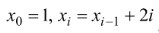
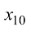
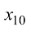
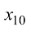
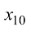
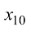

Задача 1. Нехай , де
. Визначити  . Розв’язати з використанням рекурсивних і нерекурсивних алгоритмів
 . Визначити  .
Розв’язати з використанням рекурсивних і нерекурсивних алгоритмів. Визначити  .
Розв’язати з використанням рекурсивних і нерекурсивних алгоритмів
. Визначити  .
Розв’язати з використанням рекурсивних і нерекурсивних алгоритмів. Визначити  .
Розв’язати з використанням рекурсивних і нерекурсивних алгоритмів